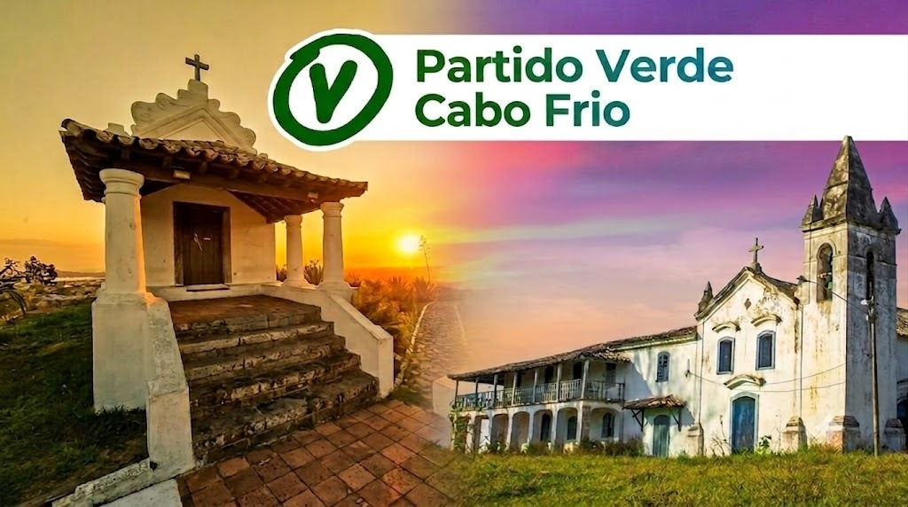

Construindo Pontes, Fiscalizando Recursos
Descubra a 4ª Escolha para Cabo Frio: um fórum permanente de participação popular para debater a cidade e cobrar soluções reais.
Participe e Fiscalize Cabo Frio
Acesse diretamente cada ferramenta da Comunidade Verde
Fórum Permanente
Editorial com postagens independentes, vídeos, pautas urgentes e propostas populares.
Agenda nos Bairros
Calendário vivo das plenárias, reuniões comunitárias e visitas técnicas em toda Cabo Frio.
Orçamento Municipal
Painel de receitas, royalties e repasses integrados em tempo real para consulta pública.
Câmara Municipal
Acompanhamento de projetos, produtividade dos vereadores e votações nominais.
Artigos, Pautas e Debates da Cidade
Publicações oficiais da Comunidade Verde. Compartilhe cada pauta diretamente nas redes sociais.
Agenda nos Bairros
Acompanhe as plenárias, reuniões comunitárias e visitas técnicas em Cabo Frio. Toque em qualquer evento para salvar na sua agenda.
Orçamento Municipal
Discriminação oficial das fontes de receita, royalties e repasses atualizados em tempo real.
Monitoramento da Câmara Municipal
Acompanhe a produção legislativa, o tradutor cidadão de pautas e o voto nominal de cada vereador de Cabo Frio.